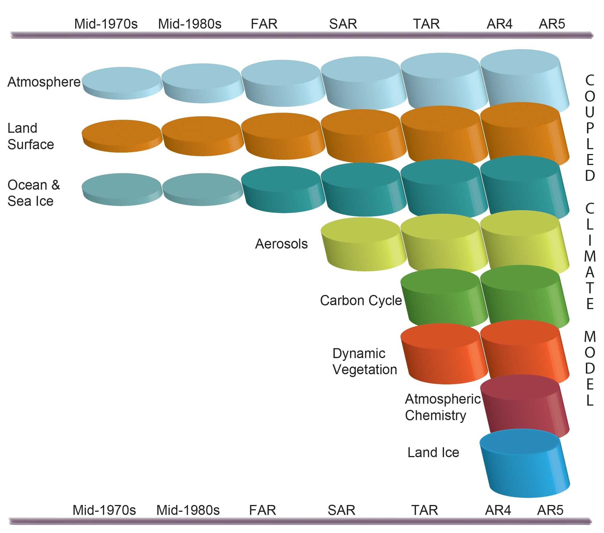
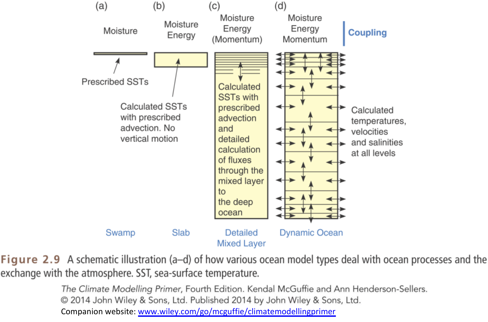

Week 8 · October 29, 2026
The climate system and climate models
Adapted from The Climate Laboratory by Brian E. J. Rose, University at Albany.
Five basic types of climate model1. Energy Balance Models (EBMs)2. Radiative-convective (RC) and single-column models (SCMs)3. Other simplified and integrated modeling approaches4. Global Circulation Models (GCMs)5. Earth System Models (ESMs)
1. Energy Balance Models (EBMs)Energy Balance ModelA simplified climate model (typically zero- or one-dimensional) predicting the surface temperature as a function of the Earth’s energy balance (i.e., the imbalance between absorbed shortwave radiation and outgoing longwave radiation).Simplified relationships are used to calculate the terms contributing to the energy balance in each latitude zone in the one-dimensional case.
The EBM from our latitude labTransport cools the tropics and warms the poles. At equilibrium, transport heating balances net radiation locally.Source: Week 6 latitude EBM lab, Section 3. Left: model with and without transport, and NCEP reanalysis. Right: energy budget with transport.
2. Radiative-convective and single-column modelsBoth resolve the vertical column, but the terms describe different aspects of a model.- Radiative-convective (RC) model: focuses on radiation and convection and how they establish a vertical temperature profile and lapse rate.- Single-column model (SCM): runs a GCM’s column physics, including radiation, convection, clouds, turbulence, and surface exchanges. Large-scale transport is prescribed or omitted; the column does not predict a surrounding circulation.
A radiative–convective columnTemperature varies with pressure; the curves compare different absorbing-gas configurations.Source: Brian E. J. Rose, The Climate Laboratory (CC BY 4.0)
3. Other simplified and integrated modeling approachesAlso called “dimensionally constrained models.”- Statistical-dynamical (SD) models: calculate a simplified mean atmospheric state, often using latitude and height. Individual weather systems are not resolved; their average effects, such as heat and moisture transport by storms, are represented through statistical relationships. The mean circulation and these statistical effects interact. - Earth-System Models of Intermediate Complexity (EMICs) extend SD models to include interactive chemistry, especially the cycling of carbon between ocean, atmosphere and land.- Integrated Assessment Models (IAMs) couple the climate system to models of economic activity to more fully assess the impact of particular policy choices affective emissions.
An integrated assessment model: GCAMAssumptions about society and technology become scenarios of emissions, land use, and climate.Source: JGCRI, GCAM documentation, overview Figure 1
4. General Circulation Models (GCMs)GCM can mean General Circulation Model, Global Climate Model, or Global Circulation Model.- Simulate the three-dimensional, time-evolving circulation of the atmosphere, ocean, or both.- AGCM: atmospheric model. OGCM: ocean model. AOGCM / CGCM: coupled atmosphere–ocean model.- Originally developed to explain the mean circulation: for example, why surface winds tend to be westerly in midlatitudes and easterly in the tropics.- Combine circulation with radiation and other physical processes to calculate the evolving climate state. Atmosphere and ocean components can also be run separately for experiments and evaluation.- Vertical grid spacing is typically much smaller than horizontal spacing, while the number of vertical layers is usually smaller than the number of horizontal columns.
A GCM: connected columns on a gridThe grid represents horizontal and vertical structure; column physics represents additional processes.Source: McGuffie & Henderson-Sellers, The Climate Modelling Primer, 4th ed., Figure 2.5; via Rose
5. Earth System Models
Ascending the pyramid even more and moving forward in climate modeling history, more processes that used to be fixed come to be incorporated into GCMs and the coupling becomes more complete: e.g. changes in biomes and vegetation, chemical changes in atmosphere, ocean and soil.
Such models are now generally known as Earth System Models.
For brevity we use the generic term GCM to mean any complex three-dimensional model of the atmosphere and ocean and possibly other components, used for climate simulation. We will be more precise where necessary.
CESM2: coupling physical climate and biogeochemistryLand and marine biogeochemistry interact with the physical climate components through the coupled system.Source: Danabasoglu et al. (2020), Figure 1; image hosted by Utrecht University / IMAU.
Simple vs. Complex models: their different roles in the science

Model simplicity and system complexityIncluding more of the Earth system and representing each process in more detail are different choices.Source: Maher et al. (2019), Figure 1(a), reproducing the framework of Bony et al. (2013).
How did these models come together?Which came first: calculating warming from CO₂, or simulating atmospheric circulation?| Thread | Milestones | Connection to our models ||:—|:—|:—|| Energy balance and greenhouse physics | Fourier → Arrhenius | Calculating temperature from energy balance and atmospheric composition || Predicting circulation numerically | Richardson → early computer models | Solving physical equations on a grid || Coupling the climate system | Manabe and colleagues → coupled GCMs → Earth System Models | Letting components evolve together and exchange energy, water, and carbon |Explore selected milestones: UCAR history of climate science ↗These are overlapping threads, rather than separate stages that replaced one another.
Before computers: the foundations of climate modelingSource: Steve M. Easterbrook, Computing the Climate (2023), Figure 2.8, p. 34. Watercolour map by Stamen Design.
Evolving complexity of GCMs

Figure 1.13 | The development of climate models over the last 35 years showing how the different components were coupled into comprehensive climate models over time. In each aspect (e.g., the atmosphere, which comprises a wide range of atmospheric processes) the complexity and range of processes has increased over time (illustrated by growing cylinders). Note that during the same time the horizontal and vertical resolution has increased considerably e.g., for spectral models from T21L9 (roughly 500 km horizontal resolu- tion and 9 vertical levels) in the 1970s to T95L95 (roughly 100 km horizontal resolution and 95 vertical levels) at present, and that now ensembles with at least three independent experiments can be considered as standard.Historical illustration: IPCC AR5 (2013), Figure 1.13. “At present” in the original caption refers to that assessment period.
4. Introducing the GCM
Ingredients of a GCMPredict the three-dimensional, evolving circulation of the atmosphere and ocean, together with temperature and transported quantities.The model solves equations expressing:- Momentum: forces change winds and currents.- Mass: track air, water, and the substances they carry.- Energy: heating, cooling, and transport change temperature.- An equation of state: link pressure, density, and temperature.Resolved flow is combined with parameterizations of processes such as convection, clouds, and turbulent mixing.
What do the governing equations look like?A schematic set for a dry atmosphere| Physical law | Equation | What it says ||:—|:—|:—|| Momentum | \(\displaystyle \frac{D\mathbf{u}}{Dt}+2\boldsymbol{\Omega}\times\mathbf{u}=-\frac{1}{\rho}\nabla p+\mathbf{g}+\mathbf{F}\) | Forces change the velocity of moving air. || Mass | \(\displaystyle \frac{D\rho}{Dt}=-\rho\nabla\!\cdot\mathbf{u}\) | Expansion lowers density; compression raises it. || Energy | \(\displaystyle c_p\frac{DT}{Dt}-\frac{1}{\rho}\frac{Dp}{Dt}=Q\) | Heating and pressure changes alter temperature. || Equation of state | \(\displaystyle p=\rho R_dT\) | Pressure, density, and temperature are linked. |\(D/Dt\) follows moving air. \(\mathbf{u}\): velocity; \(\rho\): density; \(p\): pressure; \(T\): temperature.\(\boldsymbol{\Omega}\): Earth’s rotation; \(\mathbf{g}\): gravity; \(\mathbf{F}\): friction/mixing acceleration; \(Q\): diabatic heating per unit mass. Moisture and other tracers require additional equations; model formulations use different approximations.
Horizontal resolution and topography
Figure 1.14 | Horizontal resolutions considered in today’s higher resolution models and in the very high resolution models now being tested: (a) Illustration of the European topography at a resolution of 87.5 × 87.5 km; (b) same as (a) but for a resolution of 30.0 × 30.0 km.IPCC AR5 (2013), Figure 1.14. Descriptions of “today” and models “now being tested” refer to that assessment period.
What do we put beneath the atmosphere?The ocean can supply a prescribed lower boundary or evolve as an interacting component.

Prescribed SSTs → surface heat storage → deeper heat exchange → evolving currents and heat transport.Our ocean boxes introduced heat storage and exchange; a dynamical ocean also predicts currents. SST = sea-surface temperature. Source: The Climate Modelling Primer, 4th ed., Figure 2.9.Representing forcing, feedbacks, and heat uptakeA comprehensive model calculates how external changes and internal responses alter the planetary energy budget.Change CO₂ → calculate radiative transfer → diagnose forcing → simulate the evolving climate.- Forcing \(F\): the radiative-budget change caused by an imposed driver before global surface warming, with specified adjustments allowed. A concentration change in ppm is not itself a forcing in W m⁻².- Feedbacks \(\lambda\): the radiative response as temperature, water vapor, clouds, lapse rate, and albedo change with warming.- Heat uptake: the evolving energy imbalance changes heat storage, mainly in the ocean, and affects the pace of surface warming.Forcing definitions distinguish instantaneous effects from rapid adjustments. In a concentration-driven experiment, CO₂ is prescribed and radiative fluxes are calculated. Rose: forcing and feedback calculations.
Comprehensive models need parameterizationsComprehensive models cannot explicitly simulate every process at every scale. Parameterizations represent the effects of unresolved processes using physical relationships and evidence from observations or detailed models.Land surface processes are a good example.Exchanges of energy, water and carbon between the land and atmosphere are biologically mediated. We must (to a certain extent) rely on empirical relationships. A bit like economic modeling.We also must deal with interaction across spatial scales.E.g. cumulus convection and vertical transport of heat and water vapor
Watching weather emerge in a climate modelThe next movie shows simulated atmospheric water vapor evolving through time, as featured in Nathan Steiger’s Global Warming Science notes.Look for broad wet and dry regions, moving weather systems, and structures at different scales.A movie shows one variable from the evolving model state. Climate is described by the statistics of that changing weather.Source: Global Climate Models — Nathan Steiger.
Discussion: what does this simulation represent?- Which broad circulation patterns can you recognize from the movement and distribution of water vapor?- Which features look like individual weather systems?- What would we need to calculate from this simulation to describe its climate?
Citation information
Several figures above are reproduced from Chapter 1 of the IPCC AR5 Working Group 1 report. The report and images can be found online at https://www.ipcc.ch/report/ar5/wg1/
The full citation is:
Cubasch, U., D. Wuebbles, D. Chen, M.C. Facchini, D. Frame, N. Mahowald and J.-G. Winther, 2013: Introduction. In: Climate Change 2013: The Physical Science Basis. Contribution of Working Group I to the Fifth Assessment Report of the Intergovernmental Panel on Climate Change [Stocker, T.F., D. Qin, G.-K. Plattner, M. Tignor, S.K. Allen, J. Boschung, A. Nauels, Y. Xia, V. Bex and P.M. Midgley (eds.)]. Cambridge University Press, Cambridge, United Kingdom and New York, NY, USA, pp. 119–158, doi:10.1017/CBO9781107415324.007.
Some other figures are reproduced from The Climate Modelling Primer (4th ed) by Kendal McGuffie and Ann Henderson-Sellers, Wiley-Blackwell 2014.
Credits
This notebook is part of The Climate Laboratory, an open-source textbook developed and maintained by Brian E. J. Rose, University at Albany.
It is licensed for free and open consumption under the Creative Commons Attribution 4.0 International (CC BY 4.0) license.
Development of these notes and the climlab software is partially supported by the National Science Foundation under award AGS-1455071 to Brian Rose. Any opinions, findings, conclusions or recommendations expressed here are mine and do not necessarily reflect the views of the National Science Foundation.